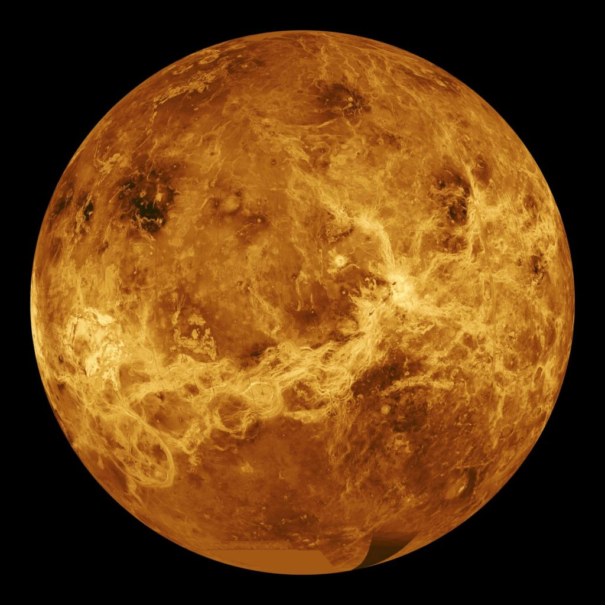

Index
Mercury
Venus
Earth
Mars
Jupiter
Saturn
Uranus
Neptune

Venus
Venus is the 2nd planet closest to the sun and one of the four rocky planets. This planet is similar to the size of Earth and is often called Earth's twin or Earth's sister.
Facts
- The temperature on Venus is about 872° F, which is hot enough to even melt lead into liquid! This makes Venus the hottest planet in our solar system, despite Mercury being closer to the Sun.
- Venus is one of the two planets in our solar system that spins backwards.
- A day on Venus is 243 Earth days while a year on Venus takes 225 Earth days, meaning that it takes Venus longer to complete a rotation on its axis than it takes for it to complete an orbit around the sun (basically, a day on Venus is longer than a year on Venus).
- When looking at photos of Venus, you'll usually see it as the picture you see on the right, however Venus might appear more white, similar to the one at the right bottom image, for the human eye.
- The reason why Venus is so hot is due to a greenhouse gas effect caused by its thick atmosphere which is made up of carbon dioxide and sulfuric acid. The gas in the atmosphere traps heat which keeps the planet hot.
- Venus is named after the goddess of love and beauty called Aphrodite. It's the only planet that's named after a female god.
Learn more about Venus Here
picryl-NASA-CC0

NASA/JPL Caltech